Next: Mean Place Transformations
Up: EXPLANATION AND EXAMPLES
Previous: Aberration
A particularly confusing aspect of published mean places is that they
are sensitive to the precise way they were determined. A mean
place is not directly observable, even with fundamental
instruments such as transit circles, and to produce a mean
place will involve relying on some existing star catalogue,
for example the fundamental catalogues FK4 and FK5,
and applying given mathematical models of precession, nutation,
aberration and so on.
Note in particular that no star catalogue,
even a fundamental catalogue such as FK4 or
FK5, defines a coordinate system, strictly speaking;
it is merely a list of star positions and proper motions.
However, once the stars from a given catalogue
are used as position calibrators, e.g. for
transit-circle observations or for plate reductions, then a
broader sense of there being a coordinate grid naturally
arises, and such phrases as ``in the system of
the FK4'' can legitimately be employed. However,
there is no formal link between the
two concepts - no ``standard least squares fit'' between
reality and the inevitably flawed catalogues.![[*]](foot_motif.gif) All such
catalogues suffer at some level from systematic, zonal distortions
of both the star positions and of the proper motions,
and include measurement errors peculiar to individual
stars.
All such
catalogues suffer at some level from systematic, zonal distortions
of both the star positions and of the proper motions,
and include measurement errors peculiar to individual
stars.
Many of these complications are of little significance except to
specialists. However, observational astronomers cannot
escape exposure to at least the two main varieties of
mean place, loosely called
FK4 and FK5, and should be aware of
certain pitfalls. For most practical purposes the more recent
system, FK5, is free of surprises and tolerates naive
use well. FK4, in contrast, contains two important traps:
- The FK4 system rotates at about
 per century relative to distant galaxies.
This is manifested as a systematic distortion in the
proper motions of all FK4-derived catalogues, which will
in turn pollute any astrometry done using those catalogues.
For example, FK4-based astrometry of a QSO using plates
taken decades apart will reveal a non-zero fictitious proper
motion, and any FK4 star which happens to have zero proper
motion is, in fact, slowly moving against the distant
background. The FK4 frame rotates because it was
established before the nature of the Milky Way, and hence the
existence of systematic motions of nearby stars, had been
recognized.
per century relative to distant galaxies.
This is manifested as a systematic distortion in the
proper motions of all FK4-derived catalogues, which will
in turn pollute any astrometry done using those catalogues.
For example, FK4-based astrometry of a QSO using plates
taken decades apart will reveal a non-zero fictitious proper
motion, and any FK4 star which happens to have zero proper
motion is, in fact, slowly moving against the distant
background. The FK4 frame rotates because it was
established before the nature of the Milky Way, and hence the
existence of systematic motions of nearby stars, had been
recognized.
- Star positions in the FK4 system are part-corrected for
annual aberration (see above) and embody the so-called
E-terms of aberration.
The change from the old FK4-based system to FK5
occurred at the beginning
of 1984 as part of a package of resolutions made by the IAU in 1976,
along with the adoption of J2000 as the reference epoch. Star
positions in the newer, FK5, system are free from the E-terms, and
the system is a much better approximation to an
inertial frame (about five times better).
It may occasionally be convenient to specify the FK4 fictitious proper
motion directly. In FK4, the centennial proper motion of (for example)
a QSO is:
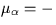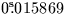+((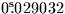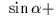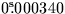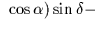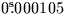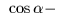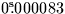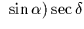
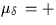 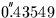 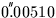 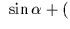 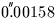 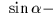 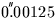 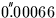 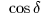
Next: Mean Place Transformations
Up: EXPLANATION AND EXAMPLES
Previous: Aberration
SLALIB --- Positional Astronomy Library
Starlink User Note 67
P. T. Wallace
12 October 1999
E-mail:ptw@star.rl.ac.uk